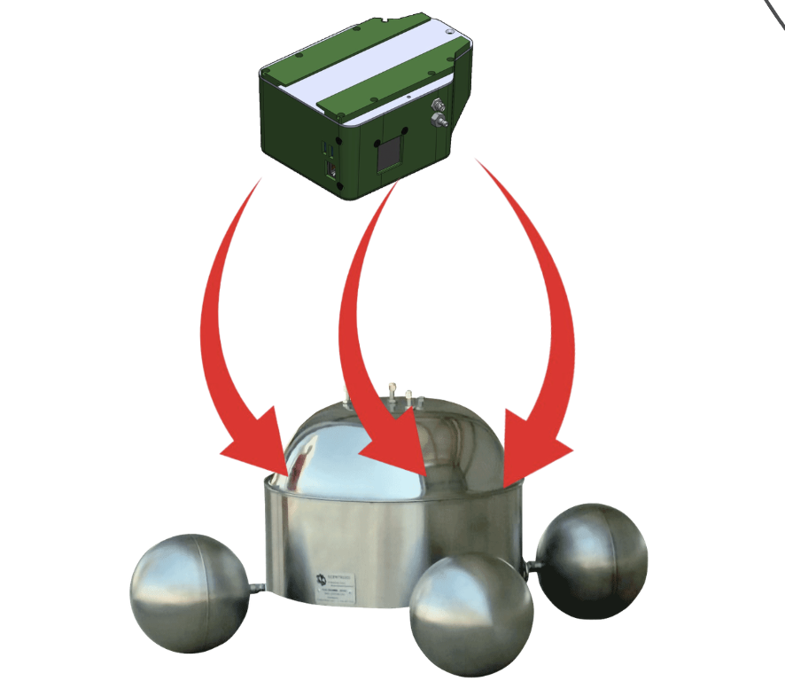

Measuring methane from waste lagoons to meet environmental regulations.

Our client, Sniffer Robotics, needs a methane flux chamber that can be attached to a drone to quantify methane flux from waste lagoons more accurately and affordably than current methods.
Environmental regulators require methane output from manure lagoons to be measured. Sniffer Robotics carries out those measurements for the farms that own the lagoons, but every current way of placing the flux chamber has a big downside.
Costly and time-consuming.
Someone has to go out on the lagoon, and the disturbance breaks up the surface layer and skews the methane readings.
Lowered gently onto the water from a stable hover: no crane, no one standing near the lagoon, and a fraction of the cost.
I'm still building this one. Check back soon for the full trail log: the design, the tests, and what I learned along the way.